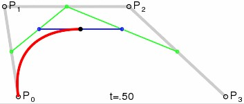

Cel strony
Strona ma na celu przybliżyć sposób tworzenia krzywej Beziera z pomocą interaktywnej animacji stworzonej specjalnie na te potrzeby.
Trochę historii
Pierwszy raz ten sposób opisu linii został zastosowany przez inżyniera firmy Renaut Pierre’a Béziera około 1962 roku i to na jego cześć do dziś się ją tak nazywa. Niezależnie stworzył ją również Paul de Casteljau z konkurencyjnej firmy Citroën. Duży udział w rozpowszechniemiu się krzywej Beziera miał A.R. Forrest, który wydał artykuł "Interactive interpolation and approximation by Bezier polynomials" w 1972 roku. Dziś krzywą Beziera powszechnie stosuje się w programach do projektowania inżynierskiego, tworzenia grafiki wektorowej (np. SVG) i systemach przetwarzania grafiki.
Zasada powstawania krzywej Beziera
Jest to linia powstała przy pomocy grupy punktów rozmieszczonych na płaszczyźnie lub w przestrzeni. Pierwszy i ostatni punkt oznaczają końce krzywej, a przy pomocy reszty modyfikujemy jej krzywiznę. Aby intuicyjnie przybliżyć jej powstawanie posłużymy się przykładem składającym się z 4 punktów. Dwa punkty końcowe i dwa na modyfikację krzywizny. W tym przydaku zaczniemy od znalezienia środkowego punktu krzywej. Najpierw połączymy prostymi kolejne punkty. Następnie wybierzemy środki powstałych odcinków (zielone punkty na rys.1). Potem połączymy kolejne środki liniami prostymi (zielone linie). Na koniec wybierzemy środki zielonych odcinków i po złączeniu powstanie nam niebieska linia. Jej środek to szukany środkowy punkt krzywej (czarny).
Rys.1
Jak widać punkt powstał przez dzielenie odcinków na pół, aż dojdziemy do pojedynczego punktu. Warto nadmienić, że nie jest to dokładnie punkt w połowie długości krzywej, ale powstał on na w skutek łączenia środków odcinków. W podobny sposób powstają inne punkty krzywej. Na przykład punkt w 3/10. Tylko tym razem nie dzielimy odcinków na pół, tylko w 3/10 ich długości.
Rys.2
W ten sposób powstaje nam cała krzywa. Tak samo jej początek i koniec, tylko dzielimy odcinek w stosunku 0/10, co oznacza, że wybieramy początek odcinka, czyli pierwszy punkt. Zmieniająca się zmienna t oznacza kolejne części setne powstającej krzywej.
Anim.1
Rysowanie w praktyce
Znamy już zasadę powstawania krzywych, ale dla zrozumienia jak położenie punktów zmienia położenie prostej przyda się prosta praktyka. Stwórz własną krzywą Beziera i poddaj ją animacji, aby zobaczyć dokładnie jak powstaje: